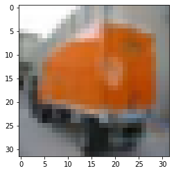
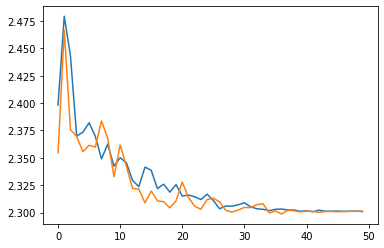
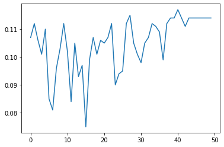

import torch
import torchvision
from torchvision.transforms import ToTensor
from torch.utils.data import DataLoader
import matplotlib.pyplot as plt
from torch import nn
from tqdm.auto import tqdm
from torchmetrics import Accuracy
from torchvision import transforms
from torchinfo import summaryPaper Replication: Vision Transformer
Python
Deep Learning
Computer Vision
The first in a series of paper replications that will collectively lay the foundation for a full replication of the stable diffusion model from scratch.
train_split_len = 1000
trainset = torchvision.datasets.CIFAR10(root = 'data', train = True, download=True, transform = ToTensor())
part_train = torch.utils.data.random_split(trainset, [train_split_len, len(trainset)-train_split_len])[0]
trainloader = DataLoader(part_train, batch_size=25, shuffle=True)Files already downloaded and verifiedtest_split_len = 200
testset = torchvision.datasets.CIFAR10(root = 'data', train = False, download=True, transform = ToTensor())
part_test = torch.utils.data.random_split(testset, [test_split_len, len(testset)-test_split_len])[0]
testloader = DataLoader(part_test, batch_size=25, shuffle=True)Files already downloaded and verifiedclasses = testset.class_to_idx
classes{'airplane': 0,
'automobile': 1,
'bird': 2,
'cat': 3,
'deer': 4,
'dog': 5,
'frog': 6,
'horse': 7,
'ship': 8,
'truck': 9}dataiter = iter(trainloader)
images, labels = next(dataiter)images.shape, labels.shape(torch.Size([25, 3, 32, 32]), torch.Size([25]))print(list(classes.keys()) [list(classes.values()).index(1)])
plt.imshow(images[1].permute(1,2,0).numpy())automobile<matplotlib.image.AxesImage at 0x7f28e9e29700>
class LinearProjectionBlock(nn.Module):
def __init__(self, in_channels = 3, patch_size = 2, embedding_dim = 768, batch_size=25, num_patches=256):
super().__init__()
self.patch = nn.Conv2d(in_channels=in_channels, out_channels=embedding_dim, kernel_size=patch_size, stride=patch_size)
self.flatten = nn.Flatten(start_dim=2, end_dim=3)
self.class_token = nn.Parameter(torch.rand(batch_size, 1, embedding_dim), requires_grad=True)
self.positional = nn.Parameter(torch.rand(batch_size, num_patches+1, embedding_dim), requires_grad=True)
def forward(self, x):
x = self.patch(x)
x = self.flatten(x)
x = x.permute(0, 2, 1)
x = torch.cat((self.class_token, x), dim=1)
x = self.positional + x
return x
class MSABlock(nn.Module):
def __init__(self, embedding_dim = 768, num_heads=12):
super().__init__()
self.normalize = nn.LayerNorm(normalized_shape=embedding_dim)
self.msa = nn.MultiheadAttention(embed_dim=embedding_dim, num_heads = num_heads, batch_first=True)
def forward(self, x):
x = self.normalize(x)
x, _ = self.msa(query=x, key=x, value=x, need_weights=False)
return xlin_projs = LinearProjectionBlock(in_channels=3, patch_size=2, embedding_dim=768, batch_size=25, num_patches=256)projs = lin_projs(images)projs.shapetorch.Size([25, 257, 768])msa_block = MSABlock(embedding_dim=768, num_heads=12)out = msa_block(projs)out.shapetorch.Size([25, 257, 768])class MLPBlock(nn.Module):
def __init__(self, embedding_dim = 768, mlp_size = 3072):
super().__init__()
self.normalize = nn.LayerNorm(embedding_dim)
self.mlp = nn.Sequential(
nn.Linear(in_features=embedding_dim, out_features=mlp_size),
nn.GELU(),
nn.Dropout(0.1),
nn.Linear(in_features=mlp_size, out_features=embedding_dim),
nn.Dropout(0.1)
)
def forward(self, x):
x = self.normalize(x)
x = self.mlp(x)
return xclass TrasformerEncoderBlock(nn.Module):
def __init__(self, embedding_dim = 768, num_heads=12, mlp_size=3072):
super().__init__()
self.msa_block = MSABlock(embedding_dim = embedding_dim, num_heads=num_heads)
self.mlp_block = MLPBlock(embedding_dim = embedding_dim, mlp_size = mlp_size)
def forward(self, x):
x = self.msa_block(x)
x = self.mlp_block(x)
return xmlp = MLPBlock(embedding_dim=768)fout = mlp(out)class ViT(nn.Module):
def __init__(self, img_size = 32, in_channels = 3, patch_size = 2, embedding_dim = 768,
batch_size=25, num_patches=256, mlp_size = 3072, layers = 12, num_heads=12, num_classes=10):
super().__init__()
self.projections = LinearProjectionBlock(in_channels=in_channels, patch_size=patch_size, embedding_dim=embedding_dim, batch_size=batch_size, num_patches=num_patches)
self.transformer_encoder = nn.TransformerEncoderLayer(d_model=embedding_dim,
nhead=num_heads,
dim_feedforward=mlp_size,
dropout=0.1,
activation="gelu",
batch_first=True,
norm_first=True)
self.encoder_layer = nn.TransformerEncoder(self.transformer_encoder, num_layers=layers)
self.classifier = nn.Sequential(
nn.LayerNorm(normalized_shape=embedding_dim),
nn.Linear(in_features=embedding_dim, out_features=num_classes)
)
def forward(self, x, layers=12):
x = self.projections(x)
x = self.encoder_layer(x)
x = self.classifier(x[:, 0])
return x
vit = ViT(in_channels = 3, patch_size = 4, embedding_dim = 768, batch_size=25, num_patches=64, mlp_size = 2048).to('cuda')summary(vit, input_size=(25, 3, 32, 32),col_names=["input_size"])======================================================================
Layer (type:depth-idx) Input Shape
======================================================================
ViT [25, 3, 32, 32]
├─LinearProjectionBlock: 1-1 [25, 3, 32, 32]
│ └─Conv2d: 2-1 [25, 3, 32, 32]
│ └─Flatten: 2-2 [25, 768, 8, 8]
├─TransformerEncoder: 1-2 [25, 65, 768]
│ └─ModuleList: 2-3 --
│ │ └─TransformerEncoderLayer: 3-1 [25, 65, 768]
│ │ └─TransformerEncoderLayer: 3-2 [25, 65, 768]
│ │ └─TransformerEncoderLayer: 3-3 [25, 65, 768]
│ │ └─TransformerEncoderLayer: 3-4 [25, 65, 768]
│ │ └─TransformerEncoderLayer: 3-5 [25, 65, 768]
│ │ └─TransformerEncoderLayer: 3-6 [25, 65, 768]
│ │ └─TransformerEncoderLayer: 3-7 [25, 65, 768]
│ │ └─TransformerEncoderLayer: 3-8 [25, 65, 768]
│ │ └─TransformerEncoderLayer: 3-9 [25, 65, 768]
│ │ └─TransformerEncoderLayer: 3-10 [25, 65, 768]
│ │ └─TransformerEncoderLayer: 3-11 [25, 65, 768]
│ │ └─TransformerEncoderLayer: 3-12 [25, 65, 768]
├─Sequential: 1-3 [25, 768]
│ └─LayerNorm: 2-4 [25, 768]
│ └─Linear: 2-5 [25, 768]
======================================================================
Total params: 72,995,850
Trainable params: 72,995,850
Non-trainable params: 0
Total mult-adds (G): 1.01
======================================================================
Input size (MB): 0.31
Forward/backward pass size (MB): 688.90
Params size (MB): 151.47
Estimated Total Size (MB): 840.67
======================================================================test_output = vit(images.to('cuda'))test_output.shapetorch.Size([25, 10])torch.argmax(test_output[1]), labels[1](tensor(0, device='cuda:0'), tensor(9))loss_fn = nn.CrossEntropyLoss()
optimizer = torch.optim.Adam(vit.parameters(), lr=1e-3, betas=(0.9, 0.999), weight_decay=0.1)
accuracy = Accuracy(task="multiclass", num_classes=10)def train_step(model, dataloader, loss_fn, optimizer):
model.train()
train_loss, train_acc = 0, 0
for batch, (X, y) in enumerate(dataloader):
X, y = X.to('cuda'), y.to('cuda')
y_pred = model(X)
loss = loss_fn(y_pred, y)
train_loss += loss.item()
optimizer.zero_grad()
loss.backward()
optimizer.step()
y_pred_class = torch.argmax(torch.softmax(y_pred, dim=1), dim=1)
train_acc += (y_pred_class == y).sum().item()/len(y_pred)
train_loss = train_loss / len(dataloader)
train_acc = train_acc / len(dataloader)
return train_loss, train_accdef test_step(model, dataloader, loss_fn):
model.eval()
test_loss, test_acc = 0, 0
with torch.inference_mode():
for batch, (X, y) in enumerate(dataloader):
X, y = X.to('cuda'), y.to('cuda')
test_pred_logits = model(X)
loss = loss_fn(test_pred_logits, y)
test_loss += loss.item()
test_pred_labels = test_pred_logits.argmax(dim=1)
test_acc += ((test_pred_labels == y).sum().item()/len(test_pred_labels))
test_loss = test_loss / len(dataloader)
test_acc = test_acc / len(dataloader)
return test_loss, test_accdef train(model,train_dataloader,test_dataloader, optimizer, loss_fn, epochs = 50):
results = {"train_loss": [],
"train_acc": [],
"test_loss": [],
"test_acc": []
}
for epoch in tqdm(range(epochs)):
train_loss, train_acc = train_step(model=model,
dataloader=train_dataloader,
loss_fn=loss_fn,
optimizer=optimizer)
test_loss, test_acc = test_step(model=model,
dataloader=test_dataloader,
loss_fn=loss_fn)
print(
f"Epoch: {epoch+1} | "
f"train_loss: {train_loss:.4f} | "
f"train_acc: {train_acc:.4f} | "
f"test_loss: {test_loss:.4f} | "
f"test_acc: {test_acc:.4f}"
)
results["train_loss"].append(train_loss)
results["train_acc"].append(train_acc)
results["test_loss"].append(test_loss)
results["test_acc"].append(test_acc)
return resultsresults = train(model=vit, train_dataloader=trainloader, test_dataloader=testloader, optimizer=optimizer, loss_fn=loss_fn, epochs=50)Epoch: 1 | train_loss: 2.3983 | train_acc: 0.1070 | test_loss: 2.3546 | test_acc: 0.0750
Epoch: 2 | train_loss: 2.4793 | train_acc: 0.1120 | test_loss: 2.4665 | test_acc: 0.1100
Epoch: 3 | train_loss: 2.4430 | train_acc: 0.1060 | test_loss: 2.3757 | test_acc: 0.0900
Epoch: 4 | train_loss: 2.3699 | train_acc: 0.1010 | test_loss: 2.3697 | test_acc: 0.1050
Epoch: 5 | train_loss: 2.3734 | train_acc: 0.1100 | test_loss: 2.3556 | test_acc: 0.1450
Epoch: 6 | train_loss: 2.3820 | train_acc: 0.0850 | test_loss: 2.3614 | test_acc: 0.0800
Epoch: 7 | train_loss: 2.3696 | train_acc: 0.0810 | test_loss: 2.3599 | test_acc: 0.1000
Epoch: 8 | train_loss: 2.3491 | train_acc: 0.0960 | test_loss: 2.3836 | test_acc: 0.1200
Epoch: 9 | train_loss: 2.3625 | train_acc: 0.1030 | test_loss: 2.3677 | test_acc: 0.0500
Epoch: 10 | train_loss: 2.3425 | train_acc: 0.1120 | test_loss: 2.3327 | test_acc: 0.1100
Epoch: 11 | train_loss: 2.3501 | train_acc: 0.1020 | test_loss: 2.3617 | test_acc: 0.1050
Epoch: 12 | train_loss: 2.3455 | train_acc: 0.0840 | test_loss: 2.3424 | test_acc: 0.0800
Epoch: 13 | train_loss: 2.3293 | train_acc: 0.1050 | test_loss: 2.3220 | test_acc: 0.1400
Epoch: 14 | train_loss: 2.3237 | train_acc: 0.0930 | test_loss: 2.3216 | test_acc: 0.1150
Epoch: 15 | train_loss: 2.3416 | train_acc: 0.0970 | test_loss: 2.3089 | test_acc: 0.1350
Epoch: 16 | train_loss: 2.3387 | train_acc: 0.0750 | test_loss: 2.3197 | test_acc: 0.0900
Epoch: 17 | train_loss: 2.3219 | train_acc: 0.0990 | test_loss: 2.3107 | test_acc: 0.0900
Epoch: 18 | train_loss: 2.3260 | train_acc: 0.1070 | test_loss: 2.3100 | test_acc: 0.1100
Epoch: 19 | train_loss: 2.3187 | train_acc: 0.1010 | test_loss: 2.3043 | test_acc: 0.1000
Epoch: 20 | train_loss: 2.3256 | train_acc: 0.1060 | test_loss: 2.3108 | test_acc: 0.1300
Epoch: 21 | train_loss: 2.3152 | train_acc: 0.1050 | test_loss: 2.3279 | test_acc: 0.1150
Epoch: 22 | train_loss: 2.3160 | train_acc: 0.1070 | test_loss: 2.3138 | test_acc: 0.1100
Epoch: 23 | train_loss: 2.3145 | train_acc: 0.1120 | test_loss: 2.3058 | test_acc: 0.0800
Epoch: 24 | train_loss: 2.3119 | train_acc: 0.0900 | test_loss: 2.3030 | test_acc: 0.1450
Epoch: 25 | train_loss: 2.3168 | train_acc: 0.0940 | test_loss: 2.3119 | test_acc: 0.0950
Epoch: 26 | train_loss: 2.3111 | train_acc: 0.0950 | test_loss: 2.3132 | test_acc: 0.0650
Epoch: 27 | train_loss: 2.3035 | train_acc: 0.1120 | test_loss: 2.3098 | test_acc: 0.0700
Epoch: 28 | train_loss: 2.3060 | train_acc: 0.1150 | test_loss: 2.3021 | test_acc: 0.1250
Epoch: 29 | train_loss: 2.3059 | train_acc: 0.1050 | test_loss: 2.3005 | test_acc: 0.0950
Epoch: 30 | train_loss: 2.3072 | train_acc: 0.1010 | test_loss: 2.3023 | test_acc: 0.0800
Epoch: 31 | train_loss: 2.3089 | train_acc: 0.0980 | test_loss: 2.3047 | test_acc: 0.0950
Epoch: 32 | train_loss: 2.3053 | train_acc: 0.1050 | test_loss: 2.3046 | test_acc: 0.0850
Epoch: 33 | train_loss: 2.3035 | train_acc: 0.1070 | test_loss: 2.3072 | test_acc: 0.0600
Epoch: 34 | train_loss: 2.3030 | train_acc: 0.1120 | test_loss: 2.3081 | test_acc: 0.1000
Epoch: 35 | train_loss: 2.3018 | train_acc: 0.1110 | test_loss: 2.2997 | test_acc: 0.1250
Epoch: 36 | train_loss: 2.3030 | train_acc: 0.1090 | test_loss: 2.3014 | test_acc: 0.1000
Epoch: 37 | train_loss: 2.3032 | train_acc: 0.0990 | test_loss: 2.2988 | test_acc: 0.1000
Epoch: 38 | train_loss: 2.3023 | train_acc: 0.1120 | test_loss: 2.3021 | test_acc: 0.1000
Epoch: 39 | train_loss: 2.3024 | train_acc: 0.1140 | test_loss: 2.3017 | test_acc: 0.1000
Epoch: 40 | train_loss: 2.3012 | train_acc: 0.1140 | test_loss: 2.3006 | test_acc: 0.1000
Epoch: 41 | train_loss: 2.3017 | train_acc: 0.1170 | test_loss: 2.3014 | test_acc: 0.1000
Epoch: 42 | train_loss: 2.3007 | train_acc: 0.1140 | test_loss: 2.3011 | test_acc: 0.1000
Epoch: 43 | train_loss: 2.3022 | train_acc: 0.1110 | test_loss: 2.3002 | test_acc: 0.1000
Epoch: 44 | train_loss: 2.3013 | train_acc: 0.1140 | test_loss: 2.3010 | test_acc: 0.1000
Epoch: 45 | train_loss: 2.3013 | train_acc: 0.1140 | test_loss: 2.3011 | test_acc: 0.1000
Epoch: 46 | train_loss: 2.3014 | train_acc: 0.1140 | test_loss: 2.3008 | test_acc: 0.1000
Epoch: 47 | train_loss: 2.3011 | train_acc: 0.1140 | test_loss: 2.3010 | test_acc: 0.1000
Epoch: 48 | train_loss: 2.3013 | train_acc: 0.1140 | test_loss: 2.3011 | test_acc: 0.1000
Epoch: 49 | train_loss: 2.3013 | train_acc: 0.1140 | test_loss: 2.3012 | test_acc: 0.1000
Epoch: 50 | train_loss: 2.3009 | train_acc: 0.1140 | test_loss: 2.3014 | test_acc: 0.1000plt.plot(results['train_loss'])
plt.plot(results['test_loss'])
plt.plot(results['train_acc'])